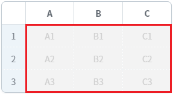
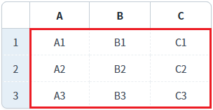
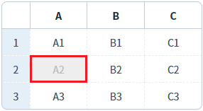
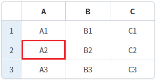
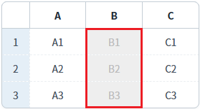
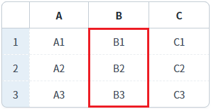
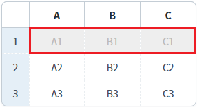
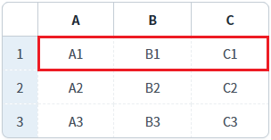

[GridView] 비활성화 여부 설정하기
1개요
GridView의 'setDisabled' 메소드를 사용하여, 비활성화를 설정한 예제입니다. 비활성화는 GirdView, Column, Row, Cell 단위로 설정할 수 있습니다.
2구현된 기능
GridView에 비활성화 여부 설정하기
셀에 비활성화 여부 설정하기
컬럼에 비활성화 여부 설정하기
로우에 비활성화 여부 설정하기
3예제 테스트 방법
3.1GridView에 비활성화 여부 설정하기
예제 영역 'GridView에 비활성화 여부 설정하기'에 구성된 GridView에서 테스트합니다.1
STEP 1: 초기 상태 확인하기
GridView의 모든 셀이 활성화되어 수정이 가능합니다. 셀을 클릭하면 수정 모드로 변경됩니다.
Image 1.브라우저(Chrome) 실행 예시

2
STEP 2: GridView에 비활성화를 설정합니다.
"GridVeiw 비활성화 하기" 버튼을 클릭합니다.
3
STEP 3: 실행 결과를 확인합니다.
GridVeiw가 비활성화 됩니다. 셀의 배경색과 글자색이 변경됩니다. 또한 셀을 클릭하면 수정 모드로 변경되지 않습니다.
Image 2.브라우저(Chrome) 실행 예시

4
STEP 4: GridView에 활성화를 설정합니다.
"GridVeiw 활성화 하기" 버튼을 클릭합니다.
5
STEP 5: 실행 결과를 확인합니다.
GridVeiw가 활성화 됩니다. 셀의 배경색과 글자색이 초기 설정 값으로 변경됩니다. 또한 셀을 클릭하면 수정 모드로 변경됩니다.
Image 3.브라우저(Chrome) 실행 예시

3.2셀에 비활성화 여부 설정하기
예제 영역 'GridView 셀에 비활성화 여부 설정하기'에 구성된 GridView에서 테스트합니다.1
STEP 1: 초기 상태 확인하기
GridView의 모든 셀이 활성화되어 수정이 가능합니다. 셀을 클릭하면 수정 모드로 변경됩니다.
Image 4.브라우저(Chrome) 실행 예시
2
STEP 2: 셀에 비활성화를 설정합니다.
"두 번째 행의 'A' 컬럼의 셀을 비활성화 하기" 버튼을 클릭합니다.
3
STEP 3: 실행 결과를 확인합니다.
두 번째 행의 'A' 컬럼의 셀이 비활성화됩니다. 셀의 배경색과 글자색이 변경됩니다. 또한 셀을 클릭하면 수정 모드로 변경되지 않습니다.
Image 5.브라우저(Chrome) 실행 예시

4
STEP 4: 셀에 비활성화를 해제합니다.
"두 번째 행의 'A' 컬럼의 셀을 활성화 하기" 버튼을 클릭합니다.
5
STEP 5: 실행 결과를 확인합니다.
두 번째 행의 'A' 컬럼의 셀이 활성화됩니다. 셀의 배경색과 글자색이 초기 설정 값으로 변경됩니다. 또한 셀을 클릭하면 수정 모드로 변경됩니다.
Image 6.브라우저(Chrome) 실행 예시

3.3컬럼에 비활성화 여부 설정하기
예제 영역 'GridView 컬럼에 비활성화 여부 설정하기'에 구성된 GridView에서 테스트합니다.1
STEP 1: 초기 상태 확인하기
GridView의 모든 셀이 활성화되어 수정이 가능합니다. 셀을 클릭하면 수정 모드로 변경됩니다.
Image 7.브라우저(Chrome) 실행 예시
2
STEP 2: 컬럼의 비활성화를 설정합니다.
"'B' 컬럼을 비활성화 하기" 버튼을 클릭합니다.
3
STEP 3: 실행 결과를 확인합니다.
'B' 컬럼이 비활성화됩니다. 셀의 배경색과 글자색이 변경됩니다. 또한 셀을 클릭하면 수정 모드로 변경되지 않습니다.
Image 8.브라우저(Chrome) 실행 예시

4
STEP 4: 컬럼의 비활성화를 해제합니다.
"'B' 컬럼을 활성화 하기" 버튼을 클릭합니다.
5
STEP 5: 실행 결과를 확인합니다.
'B' 컬럼이 활성화됩니다. 셀의 배경색과 글자색이 초기 설정 값으로 변경됩니다. 또한 셀을 클릭하면 수정 모드로 변경됩니다.
Image 9.브라우저(Chrome) 실행 예시

3.4로우에 비활성화 여부 설정하기
예제 영역 'GridView 로우에 비활성화 여부 설정하기'에 구성된 GridView에서 테스트합니다.1
STEP 1: 초기 상태 확인하기
GridView의 모든 셀이 활성화되어 수정이 가능합니다. 셀을 클릭하면 수정 모드로 변경됩니다.
Image 10.브라우저(Chrome) 실행 예시
2
STEP 2: 로우의 비활성화를 설정합니다.
"첫 번째 행을 비활성화 하기" 버튼을 클릭합니다.
3
STEP 3: 실행 결과를 확인합니다.
첫 번째 행이 비활성화됩니다. 셀의 배경색과 글자색이 변경됩니다. 또한 셀을 클릭하면 수정 모드로 변경되지 않습니다.
Image 11.브라우저(Chrome) 실행 예시

4
STEP 4: 로우의 비활성화를 해제합니다.
"첫 번째 행을 활성화 하기" 버튼을 클릭합니다.
5
STEP 5: 실행 결과를 확인합니다.
첫 번째 행이 활성화됩니다. 셀의 배경색과 글자색이 초기 설정 값으로 변경됩니다. 또한 셀을 클릭하면 수정 모드로 변경됩니다.
Image 12.브라우저(Chrome) 실행 예시

4구현 예시
4.1GridView에 비활성화 여부 설정하기
1
스크립트를 작성합니다.
GridView의 'setDisabled' 메소드를 사용합니다.
Example 1.Script
//예제 파일의 스크립트 "scwin.btn_ex1_1_onclick" 또는 "scwin.btn_ex1_2_onclick"를 참고하세요. //GridView 비활성화 grd_exam1.setDisabled("grid", true); //GridView 비활성화 grd_exam1.setDisabled("grid", false);
4.2셀에 비활성화 여부 설정하기
1
스크립트를 작성합니다.
GridView의 'setDisabled' 메소드를 사용합니다.
Example 2.Script
//예제 파일의 스크립트 "scwin.btn_ex2_1_onclick" 또는 "scwin.btn_ex2_2_onclick"를 참고하세요. //GridView 'grd_exam2'의 두 번째 행의 'A' 컬럼의 셀을 비활성화 하기 grd_exam2.setDisabled("cell", 1, "col_a", true); //GridView 'grd_exam2'의 두 번째 행의 'A' 컬럼의 셀을 활성화 하기 grd_exam2.setDisabled("cell", 1, "col_a", false);
4.3컬럼에 비활성화 여부 설정하기
1
스크립트를 작성합니다.
GridView의 'setDisabled' 메소드를 사용합니다.
Example 3.Script
//예제 파일의 스크립트 "scwin.btn_ex3_1_onclick" 또는 "scwin.btn_ex3_2_onclick"를 참고하세요. //GridView 'grd_exam3'의 'B' 컬럼을 비활성화 하기 grd_exam3.setDisabled("column", "col_b", true); //GridView 'grd_exam3'의 'B' 컬럼을 활성화 하기 grd_exam3.setDisabled("column", "col_b", false);
4.4로우에 비활성화 여부 설정하기
1
스크립트를 작성합니다.
GridView의 'setDisabled' 메소드를 사용합니다.
Example 4.Script
//예제 파일의 스크립트 "scwin.btn_ex4_1_onclick" 또는 "scwin.btn_ex4_2_onclick"를 참고하세요. //GridView 'grd_exam4'의 첫 번째 행을 비활성화 하기 grd_exam4.setDisabled("row", 0, true); //GridView 'grd_exam4'의 첫 번째 행을 활성화 하기 grd_exam4.setDisabled("row", 0, false);
5유의 사항
이 예제에서는 비활성화 여부 설정에 대한 구현 예시만 작성되어 있습니다.
비활성화 된 셀의 배경색과 글자색을 설정하는 예제는 [GridView] 셀이 비활성화되었을 때의 셀 배경색, 글자색 설정하기에 작성되어 있습니다.
6주요 API
setDisabled( type , rowIndex , colIndex , disableFlag )
setCellDisabled( rowIndex , colIndex , disabled )
setColumnDisabled( colIndex , disabled )
setRowDisabled( rowIndex , disableFlag )
disabledBackgroundColor
disabledFontColor